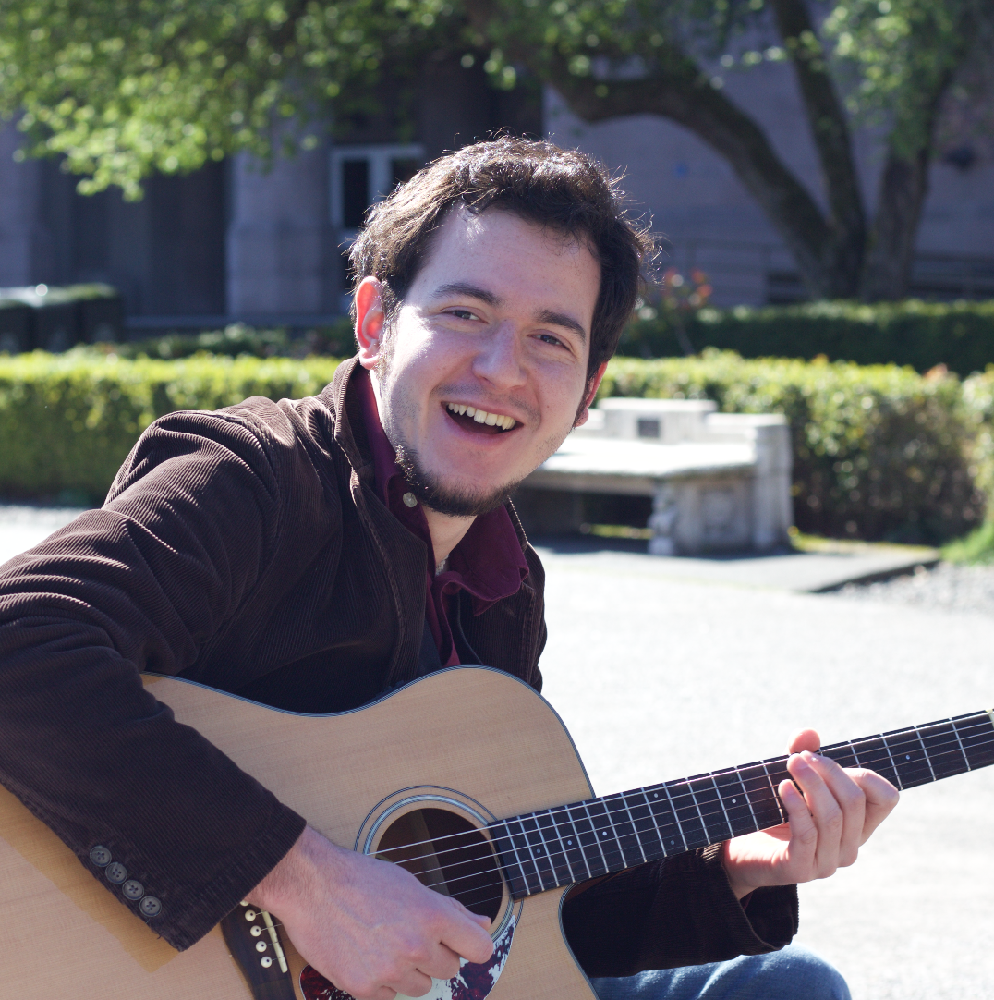
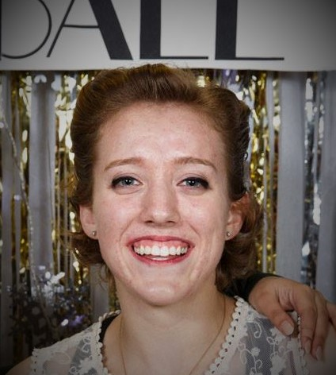

Diego Chavez
I am running to be next year's Swing Kids President because I firmly believe that the creative and social outlet that is our club deserves excellent, united leadership. My devotion to Swing Kids has been demonstrated by my full involvement with our club's activities, including lessons, social dancing, and bonding activities such as weekly team food. The experience I have this year as your Monday night dance coordinator has prepared me with important qualities that should be seen in an active president: commitment, energy, positivity, inclusivity, and a close relationship with the Swing Kids members themselves. I thank you for your vote, and I hope to be your president next year.

Holly Halstead
As President, I would like to increase UW's presence in the dance scene as well as give more learning opportunities to UW Swing Kids to work on dance. To accomplish this, I would like to look into having Lindy Hop exchanges with PLU, SU, and WWU. I have been talking with the leadership of those schools, and they would love to work with us to start an intercollegiate scene. I would also like to have dance workshops before our quarter dance and coordinate U-car rentals to take club members to dances.